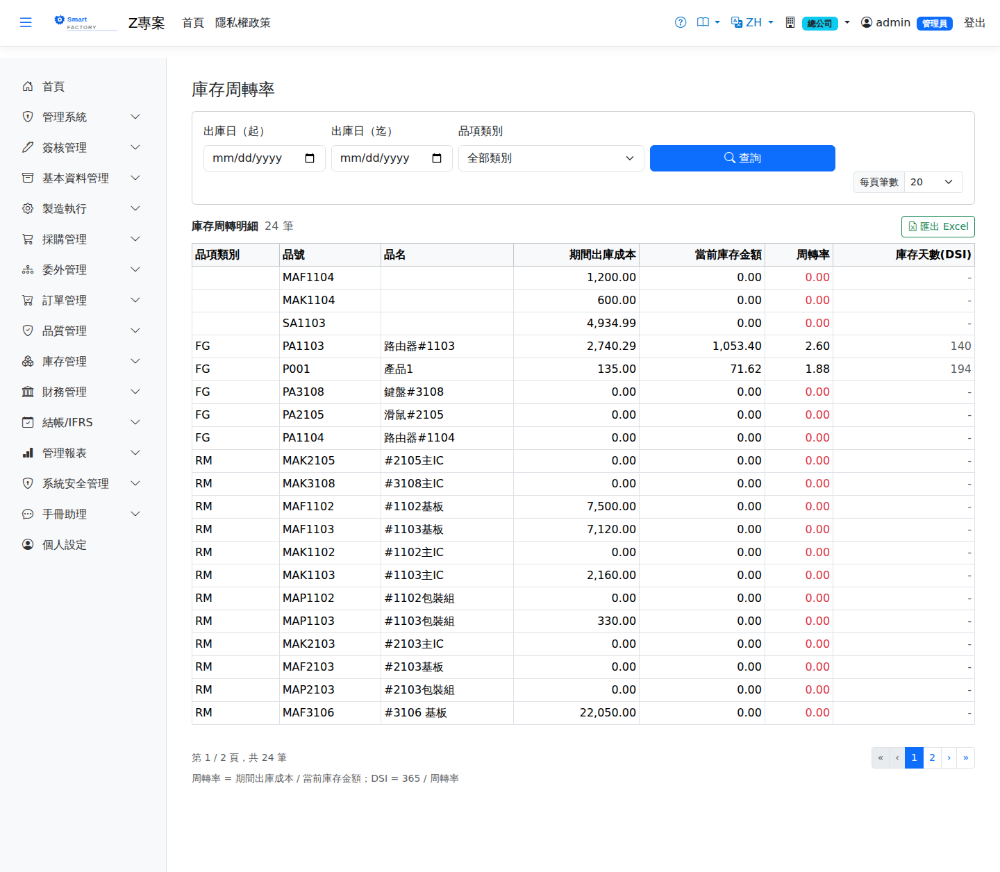

庫存周轉率Inventory Turnover
路由：/InventoryTurnover | 周轉率與周轉天數Route: /InventoryTurnover | Turnover rate and days of inventory
以出庫成本對平均庫存計算周轉率與周轉天數，可依品號類別比較，評估庫存效率。Calculates the turnover rate and days from outbound cost against average stock, comparable by product category, to judge inventory efficiency.

庫存週轉率分析畫面截圖（示意，實際欄位/資料依權限與查詢條件而異）Inventory turnover screenshot (illustrative; actual fields and data vary by permission and query criteria)
查詢Search
1
查詢列輸入條件後點「查詢」；欄位標題可點擊排序，清單下方有分頁導航。Enter your criteria on the query bar and click "Search"; column headers can be clicked to sort, and the paging controls sit below the list.
出庫成本以作廢後的淨額計：已作廢的出庫不計，作廢進貨的沖銷也不算出庫。Outbound cost is net of voids: voided issues are not counted, and reversing a voided receipt is not treated as an issue.
欄位說明Field reference
查詢條件Query criteria
| 條件Condition | 說明Guide |
|---|---|
| 出庫日（起 / 迄）Issue date (from / to) | 必填Required 計算期間出庫成本的日期區間；區間長度會影響周轉率高低。不可留白——分子是「期間」出庫成本、分母是「當下」庫存值，留白等於拿全部歷史出庫去除現有庫存Date range over which issue cost is accumulated; the length of the range affects how high the turnover comes out. It cannot be left blank: the numerator is the issue cost for the period while the denominator is the inventory value right now, so a blank range divides all history by today's stock |
| 品項類別Category | 依產品類別篩選；留空為全部Filters by product category; leave blank for all |
報表欄位Report fields
| 欄位Field | 說明Guide |
|---|---|
| 品項類別Category | 料件所屬產品類別Product category the item belongs to |
| 品號 / 品名Product | 料件代碼與名稱Product code and name |
| 期間出庫成本Period Outbound Cost | 查詢區間內該料件的出庫金額合計（銷貨成本口徑）Total issue value of the item within the query period (COGS basis) |
| 當前庫存金額Current Stock Value | 查詢時點的庫存帳面金額Book value of the stock as at the query date |
| 周轉率Turnover Rate | 期間出庫成本 ÷ 當前庫存金額；庫存金額為 0 時顯示 0。數值越高表示庫存週轉越快Issue cost for the period ÷ current inventory value; shown as 0 when the inventory value is 0. The higher the figure, the faster stock turns over |
| 庫存天數(DSI)DSI (Days) | 365 ÷ 周轉率，即目前庫存可供銷售的天數；周轉率為 0 時不計算365 ÷ turnover rate, the number of days the current stock can supply; not calculated when the turnover rate is 0 |